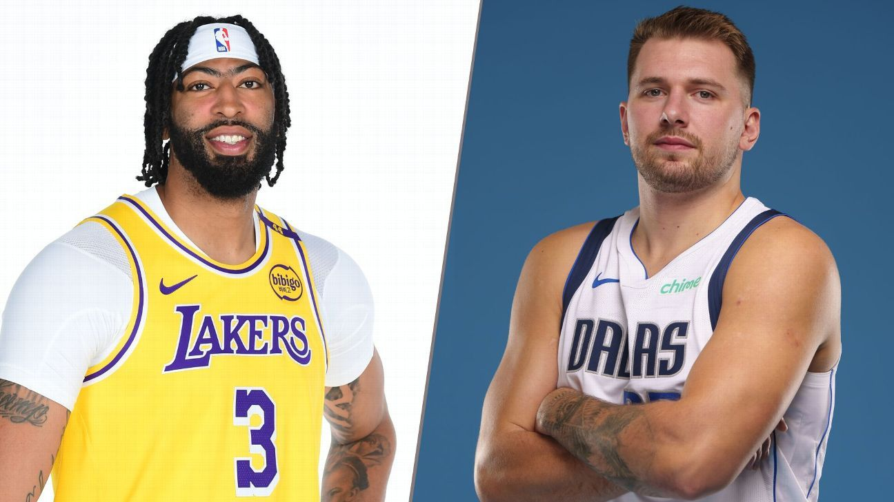
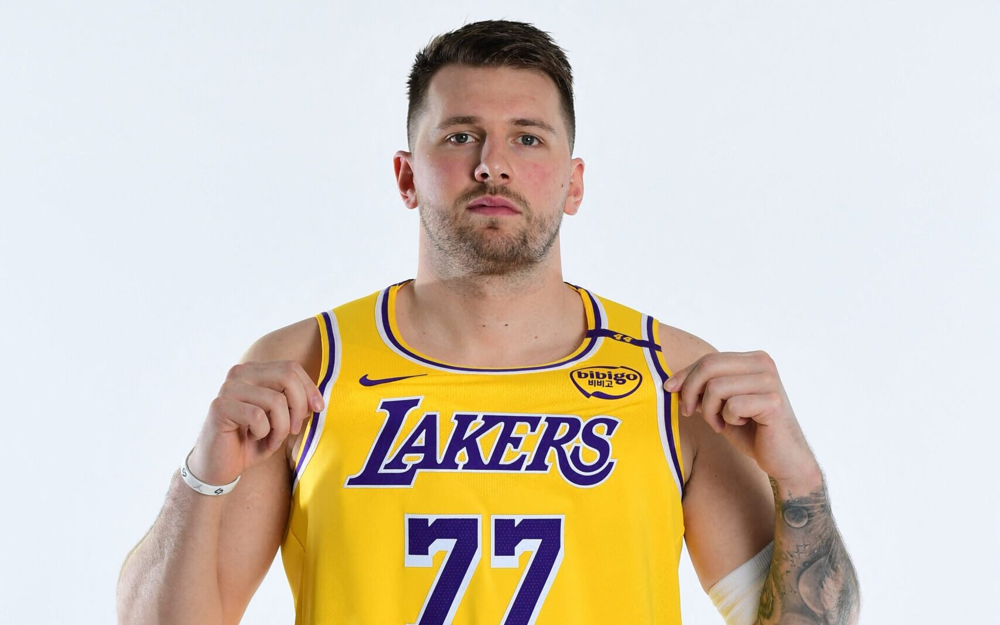
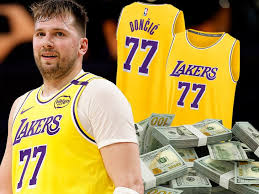

Troca bombástica na NBA 🚨🚨🚨



Trocado com o Dallas Mavericks por Anthony Davis, esloveno pode estrear na próxima segunda, dia 10. Ele se recupera de distensão muscular e vai usar o número 77 no time da Califórnia.
QUAL NÚMERO LUKA VAI JOGAR?
Doncic usará o habitual número 77 nos Lakers. O anúncio foi feito pela própria franquia no último domingo. O superstar popularizou o número incomum do basquete durante sua carreira na NBA.
QUANTO O ASTRO VAI GANHAR?
Luka Doncic estava elegível para assinar um contrato de US$ 345 milhões (o equivalente a R$ 2 bilhões) por cinco anos com os Mavs. Porém, com a mudança para o Lakers, Doncic deve fechar um contrato de no máximo US$ 229 milhões (cerca de R$ 1 bilhão).